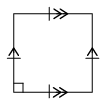
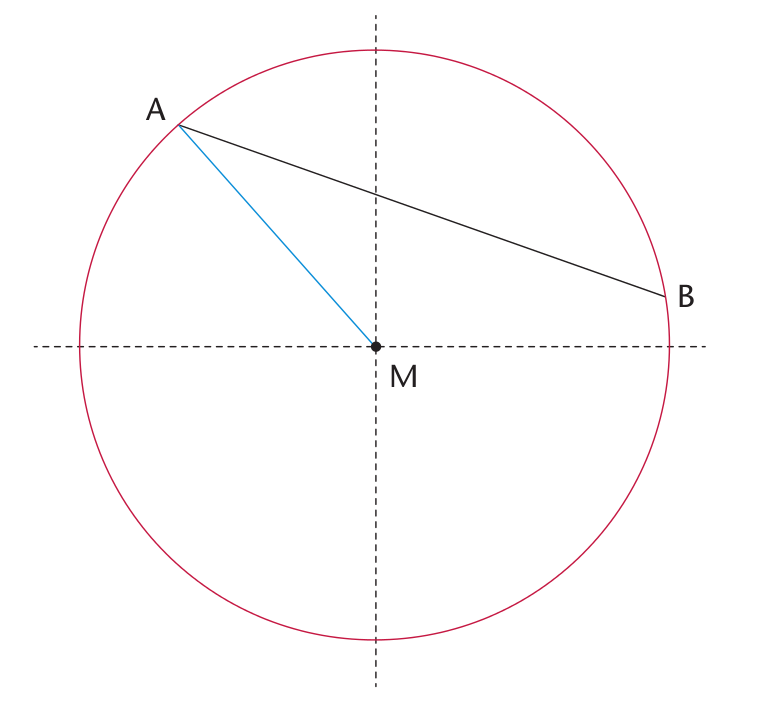

Meetkunde van
In hierdie hoofstuk gaan jy oor verskillende soorte 2D-figure leer. Jy gaan die name leer wat aan verskillende figure gegee word. Jy gaan ook oor die verskillende eienskappe leer wat verskillende soorte figure met betrekking tot hulle sye en hoeke het.
Driehoeke, vierhoeke, sirkels en ander
Besluit wat is wat en teken 'n paar figure
'n Driehoek is 'n geslote figuur met drie reguit sye en drie hoeke.
n Vierhoek het vier reguit sye en vier hoeke.
n Sirkel is rond en die rand is altyd dieselfde afstand van die middelpunt af.

-
Watter figure op die teenoorstaande bladsy is sirkels?
-
Watter figure op die teenoorstaande bladsy is driehoeke?
-
Watter figure op die teenoorstaande bladsy is vierhoeke?
Gebruik jou liniaal om die volgende te doen:
Teken twee driehoeke: 'n driehoek met drie skerphoeke en 'n driehoek met een stomphoek.
-
Teken 'n vierhoek met twee stomphoeke.
-
Kan jy 'n driehoek met twee stomphoeke teken?
-
-
Teken 'n driehoek met een regte hoek en 'n driehoek sonder enige regte hoeke.
-
Kan jy 'n driehoek met twee regte hoeke teken?
-
Kan jy 'n vierhoek met vier regte hoeke teken?
-
-
Hierdie vier lyne vorm vierhoek ABCD.

Die twee rooi sye, BC en AD, word teenoorstaande sye van vierhoek ABCD genoem.
Watter ander twee sye van ABCD is ook teenoorstaande sye?
-
Die lyne DA en AB in die figuur in vraag 7 word aangrensende sye genoem. Hulle ontmoet (sny) by 'n punt wat een van die hoekpunte van die vierhoek is.
-
Noem nog twee aangrensende sye in ABCD.
-
AB is aangrensend (lê langs) aan DA in die vierhoek ABCD. Watter ander sy van ABCD is ook aangrensend aan DA?
-
-
William sê:
"Elke sy van 'n vierhoek het twee aangrensende sye.
"Elke sy van 'n vierhoek het ook twee teenoorstaande sye."
Is William reg? Gee redes vir jou antwoord.
-
William sê ook:
"In 'n driehoek is elke sy aangrensend aan al die ander sye."
Is dit waar? Gee 'n rede vir jou antwoord.
-
Sê in elke geval of die twee sye teenoorstaande sye of aangrensende sye van die vierhoek PQRS is.

QP en PS
-
QP en SR
-
PQ en RQ
-
PS en QR
-
SR en QR
Verskillende soorte driehoeke
Gelyksydige, gelykbenige en reghoekige driehoeke
'n Driehoek met twee gelyke sye word 'n gelykbenige driehoek genoem.
'n Driehoek met drie gelyke sye word 'n gelyksydige driehoek genoem.
'n Driehoek met 'n regte hoek word 'n reghoekige driehoek genoem.
'n Driehoek met drie sye met verskillende lengtes en geen regte hoek nie word 'n ongelyksydige of ongelykbenige driehoek genoem.

Meet elke hoek in elk van die gelykbenige driehoeke wat hier bo gegee word. Merk jy iets spesiaals op? As jy nie seker is nie, teken nog gelykbenige driehoeke in jou oefeningboek.
-
Meet die hoeke en sye van die volgende driehoeke. Wat is spesiaal aan hierdie driehoeke? Met ander woorde, wat maak hierdie driehoeke anders as ander driehoeke?

Hierdie driehoeke word gelyksydige driehoeke genoem.
Meet elke hoek in elk van die volgende driehoeke. Sien jy enigiets spesiaals aan hierdie hoeke raak?

-
Identifiseer die langste sy in elk van die driehoeke. As jy nie seker is watter een die langste sy is nie, meet die sye. Wat sien jy raak oor die langste sy in elk van hierdie driehoeke?
Hierdie driehoeke word reghoekige driehoeke genoem.
Vergelyk en beskryf driehoeke
Wanneer twee of meer sye van 'n figuur ewe lank is, wys ons dit deur kort strepies op die gelyke sye te maak.
Gebruik die volgende driehoeke om die vrae wat volg te beantwoord:


Watter driehoek het net twee sye wat gelyk is?
Wat word hierdie soort driehoek genoem?
-
Watter driehoek se sye is al drie gelyk?
Wat word hierdie soort driehoek genoem?
-
Watter driehoek het 'n hoek wat gelyk is aan 90°?
Wat word hierdie soort driehoek genoem?
Watter soort driehoek is elk van die volgende?

Vind onbekende sye in driehoeke
Benoem elke soort driehoek hier onder.
Gebruik die gegewe inligting om die lengtes van die volgende sye te bepaal:
AB:
BC:
EF:
-
Kan jy die lengte van GH en van HI bepaal? Verduidelik jou antwoord.
-
Die vierkant in die hoek van \(\triangle JKL\) wys dat dit 'n regte hoek is. Gee 'n rede vir elk van jou antwoorde hier onder.

IIs hierdie driehoek ongelykbenig, gelykbenig, of gelyksydig?
-
Noem die twee sye van die driehoek wat gelyk is.
-
Wat is die lengte van JK?
-
Noem twee gelyke hoeke in hierdie driehoek.
-
Wat is die grootte van \(\hat{J}\) en \(\hat{L}\) ?
Verskillende soorte vierhoeke
Ondersoek vierhoeke
Die twee bladsye wat volg wys verskillende groepe vierhoeke.
-
In watter groepe is albei pare teenoorstaande sye ewewydig?
-
In watter groepe is net sommige aangrensende sye gelyk?
-
In watter groepe is al vier hoeke gelyk?
-
In watter groepe is al vier sye gelyk?
-
In watter groepe is elke sy loodreg op die sye aangrensend daaraan?
-
In watter groepe is teenoorstaande sye gelyk?
-
In watter groepe is ten minste een paar aangrensende sye gelyk?
-
In watter groepe is ten minste een paar aangrensende sye gelyk?
-
In watter groepe is ten minste een paar teenoorstaande sye ewewydig?
-
In watter groepe is al die hoeke regte hoeke?
-
-
Die figure in groep 1 word parallelogramme genoem..
-
Wat merk jy op oor die teenoorstaande sye van parallelogramme?
-
Wat merk jy op oor die hoeke van parallelogramme?
-
-
Die figure in groep 2 word vlieërs genoem.
Wat merk jy op oor die sye van vlieërs?
-
Wat merk jy nog op in die vlieërs?
Groep 1

Groep 2

Groep 3

Groep 4

Groep 5

Groep 6

Die figure in groep 3 word ruite genoem.
-
Wat merk jy op oor die sye van ruite?
-
Wat sien jy nog oor die ruite raak?
-
-
Die figure in groep 4 word reghoeke genoem.
-
Wat merk jy op oor die teenoorstaande sye van reghoeke?
-
Wat merk jy op oor die hoeke van reghoeke?
-
Wat merk jy op oor die aangrensende sye van reghoeke?
-
-
Die figure in groep 5 word trapesiums genoem.
Wat merk jy op oor die teenoorstaande sye van trapesiums?
Die pyltjies wys watter sye is ewewydig aan mekaar.
-
Die figure in groep 6 word vierkante genoem.
-
Wat merk jy op oor die sye van vierkante?
-
Wat sien jy raak oor die hoeke van vierkante?
-
Vergelyk en beskryf figure
Benoem elke figuur in elke groep.
Groep A


Groep B


Op watter manier(e) is die figure in elke groep eenders?
Groep A:
Groep B:
-
Op watter manier(e) verskil een van die figure in elke groep van die ander twee figure in die groep?
Groep A:
Groep B:
Vind onbekende sye in vierhoeke
Gebruik dit wat jy oor die sye en hoeke van vierhoeke weet om die volgende vrae te beantwoord. Gee redes vir jou antwoorde.

Watter soort vierhoek is ABCD?
-
Noem een sy wat gelyk is aan AB.
-
Wat is die lengte van BC?

-
Watter soort vierhoek is EFGH?
-
Wat is die lengtes van die volgende sye?
EF:
GH:
-

-
Watter soort vierhoek is JKLM?
-
Wat is die lengte van JK?
-

Figuur PQRS is 'n vlieër met PQ = 4 cm en QR = 10 cm. Voltooi die tekening deur:
-
die hoekpunte van die vlieër te benoem
-
op die tekening te wys watter sye gelyk is
-
die lengte van elke sy neer te skryf.
-
Sirkels

Maak 'n kolletjie in die middel van die sirkel langsaan. Skryf die letter M langs die kolletjie. As jou kolletjie in die middel van die sirkel is, word dit diemiddelpunt van die sirkel genoem.
-
Trek lyne MA, MB en MC vanaf M na die rooi punte A, B en C.
Die drie rooi punte is op die sirkel met middelpunt M.
’n Reguit lyn, soos AC, wat oor ’n sirkel getrek word en deur die middelpunt gaan, word die middellyn van die sirkel genoem.
Meet MA, MB en MC.
As MA, MB en MC ewe lank is, het jy die middelpunt goed gekies.
As hulle nie ewe lank is nie, kan jy dalk jou skets van 'n sirkel en sy dele verbeter.
'n Reguit lyn vanaf die middelpunt van 'n sirkel na 'n punt op die sirkel word 'n radius van die sirkel genoem.Die blou lyn, MA, is ’n radius. Enige reguit lyn vanaf die middelpunt na die sirkel is ’n radius
Die swart lyn AB verbind twee punte op die sirkel. Ons noem hierdie lyn ’n koord van die sirkel.
In die volgende twee diagramme is die ingekleurde dele segmente van 'n sirkel. 'n Segment is die gebied tussen 'n koord en 'n boog van 'n sirkel.

In die sirkel hier regs word die rooi deel 'n sektor van 'n sirkel genoem. Soos jy kan sien, is 'n sektor die gebied tussen twee radiusse en 'n boog.
Gelykvormige en kongruente figure
Drie groepe vierhoeke word op hierdie bladsy en die volgende een gewys.
Wat maak elke groep anders as die ander groepe, behalwe die kleure?
Groep A:
-
Groep B:
-
Groep C:
Groep A

Groep B

Groep C

Ons sê dat figure wat dieselfde vorm het, soos die blou figure op die vorige bladsy, gelykvormig is. Gelykvormige figure kan in grootte verskil, maar sal altyd dieselfde vorm hê.

Voorbeeld van gelykvormige figure

Voorbeeld van kongruente figure
Ons sê dat figure wat dieselfde vorm en dieselfde grootte het, soos die rooi figure op die vorige bladsy, kongruent is. Hierdie figure hetaltyd dieselfde grootte en vorm.
Is die rooi figure op die vorige bladsy gelykvormig?
-
Kyk na groepe D, E, F en G op hierdie en die volgende bladsy. Sê in elke geval of die figure gelykvormig en kongruent is, gelykvormig maar nie kongruent is nie, of nie gelykvormig of kongruent is nie.
Groep D:
-
Groep E:
-
Groep F:
-
Groep G:
Groep D
Groep E

Groep F

Groep G